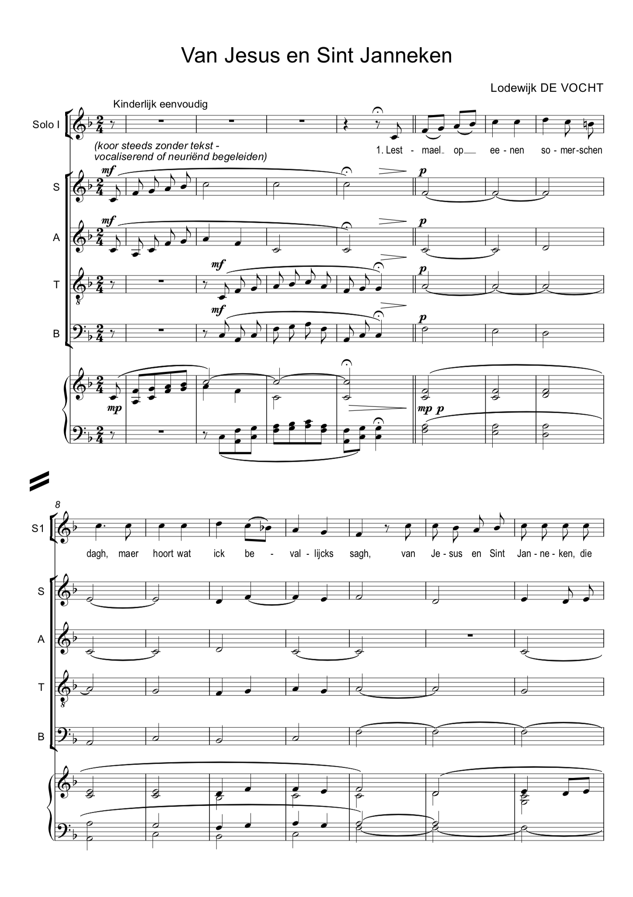
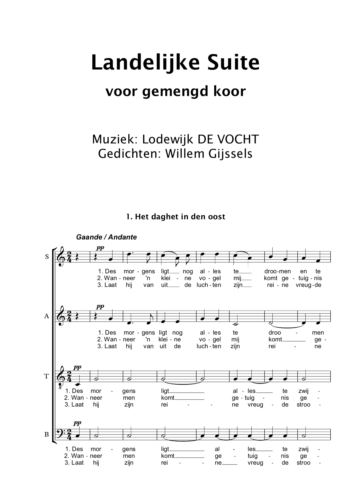
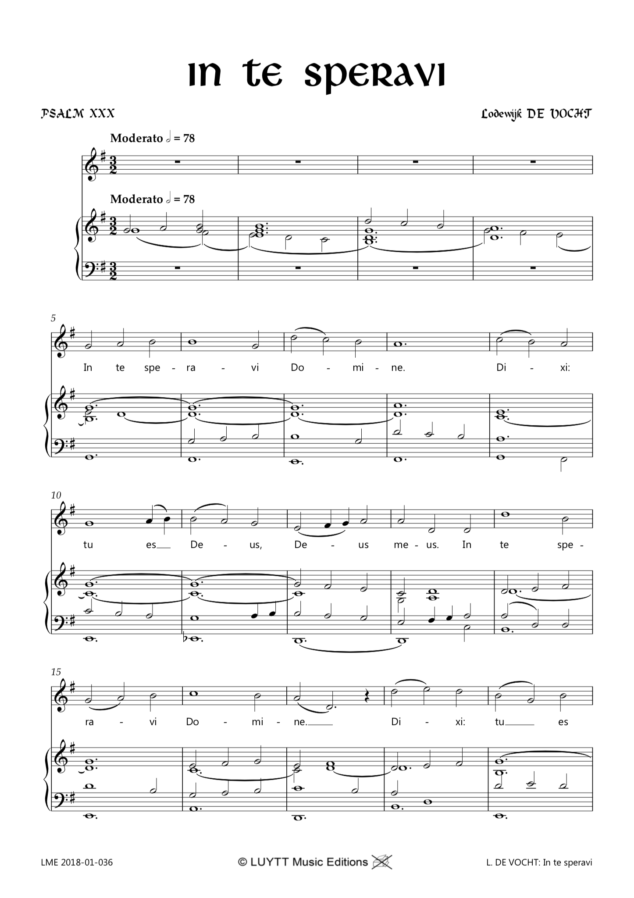
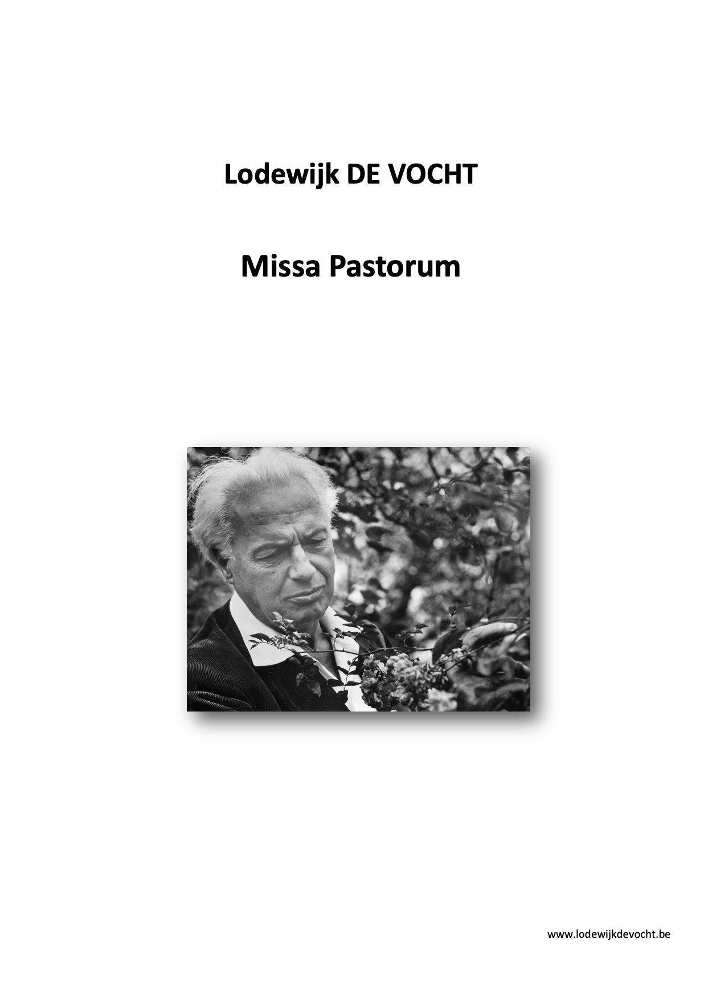
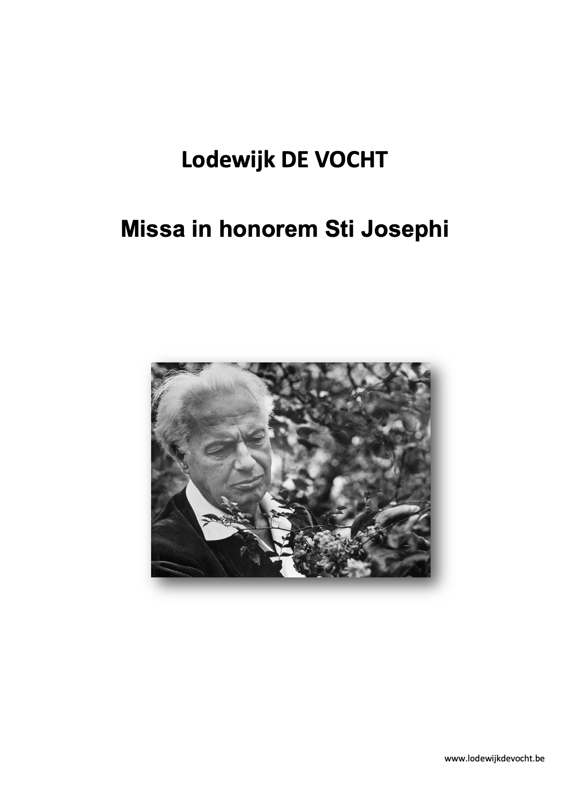
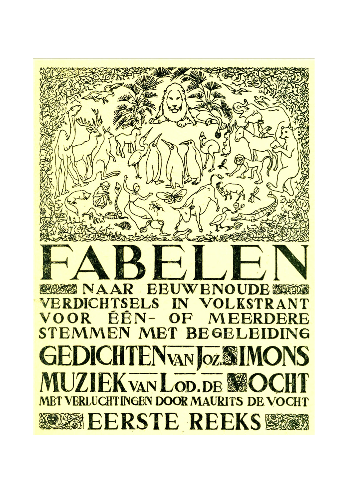
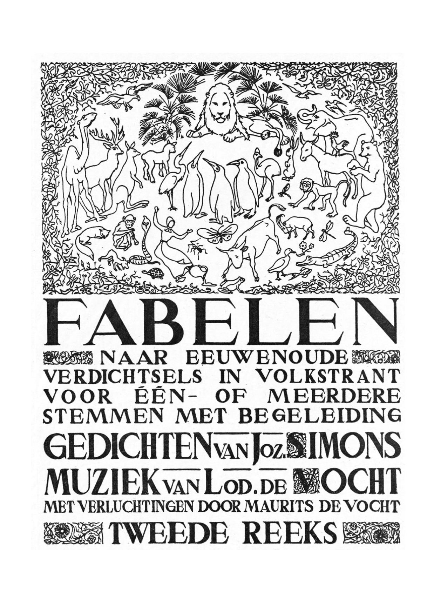
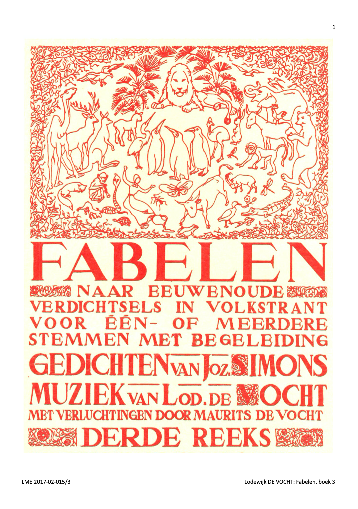

Koormuziek

Van Jesus en Sint Janneken
3 kinderstemmen en/of 3 gelijke stemmen en/of piano/orgel, beschikbaar bij LUYTT

Landelijke Suite
voor gemengd koor, tekst Willem Gijssels, beschikbaar bij LUYTT

In te speravi
1, 2 of 4-stemmige zang, met of zonder piano/orgelbegeleiding, beschikbaar bij LUYTT

Missa Pastorum A+B
koor en orgel, beschikbaar bij Musikproduktion Höflich München
Missa in honorem angelorum
3-stemmig koor en orgel, beschikbaar bij Musikproduktion Höflich München

Missa in honorem Sti Josephi
SATB en orgel, beschikbaar bij Musikproduktion Höflich München

Fabelen boek 1
voor 1 of meerdere stemmen met begeleiding, beschikbaar bij LUYTT

Fabelen boek 2
voor 1 of meerdere stemmen met begeleiding, beschikbaar bij LUYTT

Fabelen boek 3
voor 1 of meerdere stemmen met begeleiding, beschikbaar bij LUYTT